Elysium Getting Started Guide
Elysium is a generative MIDI sequencer. Okay so what does that mean?
Let's take that in reverse:
Elysium is a sequencer, that means it's designed to produce sequences of notes that can be layered to form music.
Elysium uses MIDI which means that it doesn't make sounds itself but can drive MIDI based synthesizers, samplers, and other instruments. It also means that Elysium's output can be recorded, and manipulated, in a DAW such as Logic or Ableton Live.
Elysium is generative which relates to the way the music is created by building up a "system" composed of layers, cells, tokens, and playheads that combined, when "played", to produce a sequence of notes.
Still not with me? That's okay. Once you've played with it a bit it will all become clear.
The first thing people usually wonder is "Why doesn't it make any noise?" There's a good reason for that, Elysium generates MIDI which is an industry standard protocol for talking to things like synthesizers, samplers, and drum machines. And there are a lot of great synths out there. All you have to do is install one.
If you already have something like Logic, Ableton Live, Komplete, Kore, or, Reason then you already have some great tools for making noises. Elysium will route its MIDI into any of those and can play their instruments as if it were a regular keyboard.
If you don't have anything that makes cool noises then I suggest you start with the free Kore Player from Native Instruments. This comes with a 300MB library of great sounds but, beware, try it and you won't want to stop there and, believe me, Native Instruments can supply the goods if you can afford them :)
Elysium is also not a VST, RTAS, or AU plugin. It is a standalone Mac application. Whilst it doesn't plug into a DAW it will work with any of them. It's possible that, if I learned enough about how to create AU's, an Audio Unit version might appear in the future but it's very low priority.
Finally, something else Elysium is not is finished which brings me neatly to...
Elysium was started in August 2008 and, like all newborns, is liable to be a bit unpredictable at times, have hysterical fits, and leave a mess behind it. Generally you're also going to meet lots of dark corners in Elysium that have not been well thought out and your feedback, of all kinds, for improving the application is most welcome.
If you want to let us know about a problem or request a feature why not drop by our Get Satisfaction page. There is an option for this under the help menu of Elysium itself.
If you want to get more immediate help, or just chat about Elysium (or MIDI generally) come find me in #midi on FreeNode IRC. You will need an IRC client like Limechat for Mac OS X or mIRC for Windows.
Start Elysium. Nothing much happened? Right, by default Elsyium doesn't create an emtpy file for you so press Cmd+N (or use New from the File menu). Now you should be looking at something like this:
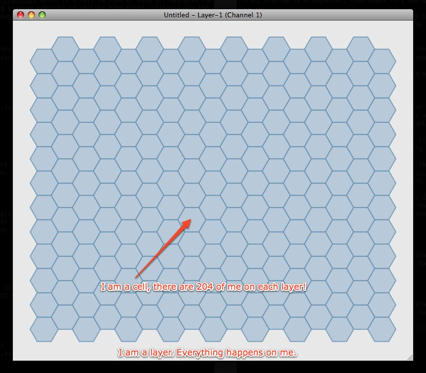
This is a layer. It's composed of a honeycomb of cells arranged in 17 columns of 12 rows each. Each cell corresponds to a musical note which will sounds if you click it using your left mouse button (and assuming you have something ready to make noises in response to notes on MIDI channel 1). Let's take a close look, from the Layer menu select Show Notes and you should see this instead:
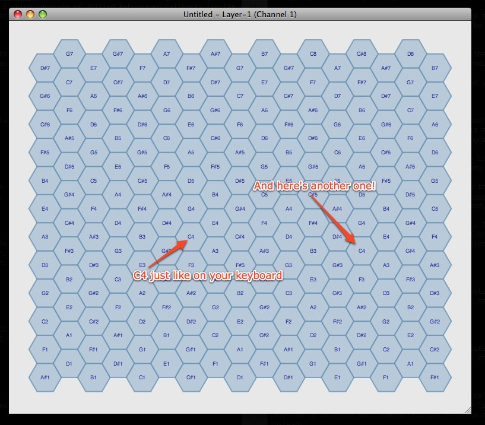
The notes aren't spread out randomly but follow a pattern called a 'Harmonic Table'. For example, if you've played a keyboard, this group should look familiar:
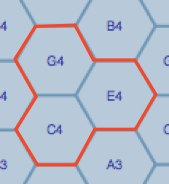
But if all you could do was click little hexes you'd be worse off than just using your keyboard so let's get a taste of what Elysium can do!
Right click (if you are using a laptop with a trackpad and ctrl+click doesn't work try using a two-finger click instead) one of the hexes, say a C4, and add a generator. Then add a note. Now do the same to add a note 2 or 3 hexes directly north of the hex you added the generator to. You should end up with something like this:
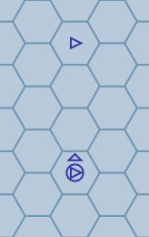
Now set it going using the start player option from the menu:
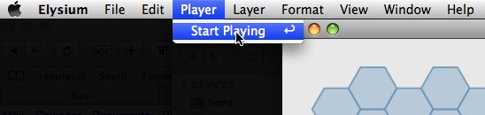
Now the player is running and the generate will generate a series of playheads (the moving red hexes) that will travel up the screen. You should hear a note played when the playhead is generated and another note played as the playhead enters the cell with the second note token we put down. If you're not hearing those make sure you have Elysium routing its MIDI to a compatible sound-producing application.
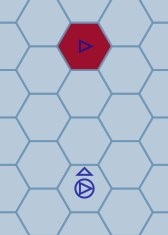
Note that it doesn't play a note for each hexes the playhead travels over, only the hexes with a note token specifically assigned to them by you. Stop the player again. If the layer has focus you can do that with the Enter key otherwise try the transport control in the player inspector. That's this one:
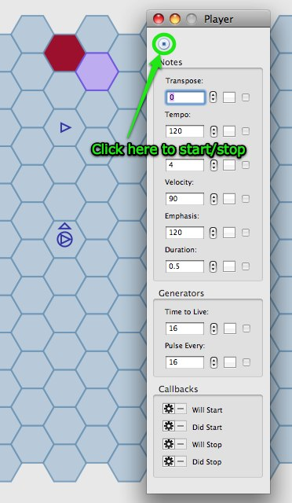
Which brings us to those inspectors.
Elysiums inspectors are kind of scary looking and, in truth, they are not as well designed as they could be. But the good news is that once you have learned how to operate one control, pretty much all the other controls in all the inspectors work the same way. Also many of the controls are duplicated across the different inspectors so there really isn't as much to learn as you might, at first, think.
Let's take a look at one of the controls, the tempo:
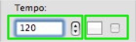
Tempo is measured in Beats Per Minute (BPM). So with the tempo set at it's default of 120 there are 2 beats each second. In practical terms that means a playhead moves twice and can potentially play two notes per second.
The value of the tempo knob is set in the controls in the left hand green box. You can either type a value in to replace 120 or use the stepper controls to move the value up and down. Start the player again and try typing in a value of 300 (and pressing enter to confirm, you don't need to press enter when you use the steppers though) and see what happens.
The two controls in the right hand green box allow you to assign an oscillator to the knob value. Using an oscillator gives the knob a dynamic value. We'll get to that later.
Now that you know how this works, you know how nearly all of the inspector controls work. Let's take a look at another example, duration:
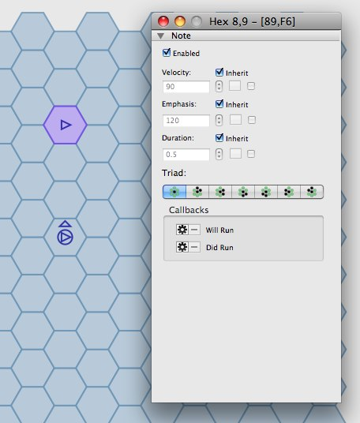
Do you notice how the hex with the upper note token is highlighted? That's the selected hex and you can see that I am now looking at the Hex Inspector which shows you what is on that hex. In this case just a note token. If we had the hex with the generator selected you'd see more information. If you click on a hex with no tokens the hex inspector is, predictably enough, empty.
Something you should notice is that the note information on the hex inspector looks similar to a group of controls on the player inspector. But the duration control on the hex inspector isn't quite the same as it's counterpart in the player inspector:
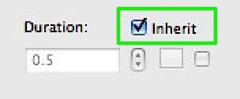
Two things are different. The first is that we have a new inherit control which is, by default, checked. The second is that the controls for setting the value of the duration are grayed out and you can't use them.
Duration is, as you might have guessed, how long (in seconds) the note will be played for. And the player sets the value as half a second. When inherit is checked this particular note will inherit its duration from somewhere else. Uncheck it and you will see that the controls for setting the value become enabled. This means that the note is now free to use its own duration. Change the duration value to be 1.0. If the player is started you should be able to hear that the first note played is half a second long and the second note played is a full second long.
When the duration was inheriting its value, where was it inheriting it from?
Congratulations!
You see Elysium is multi-layered and each layer gets its own cells and can have its own pattern. It just happens that, in our previous example, we only have one layer. But here is an example of two layers:
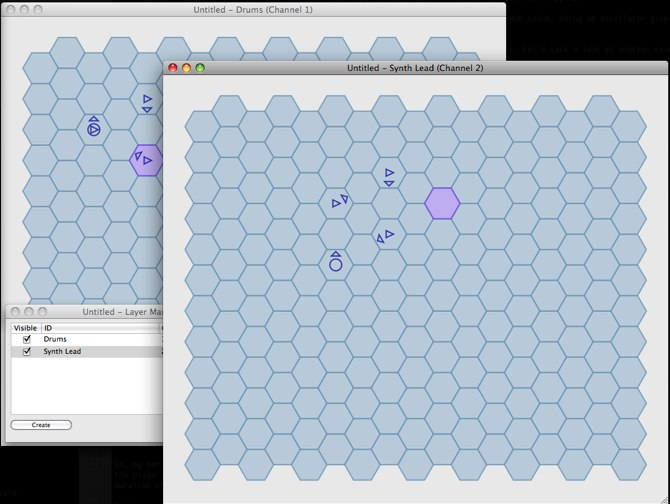
In this case you can see I have named the layers (by double clicking the layer name in the Layer Manager panel) to describe what instrument I want them to play.
This naming process is entirely optional and there is no pre-determined structure for how things work. You can have one layer playing multiple instruments or multiple layers playing the same instrument, Elysium doesn't care.
What's important here though is that you understand the relationship between the player, layers, and tokens placed on layer cells. If we bring up the layer inspector up you can see the whole picture of how duration is inherited::
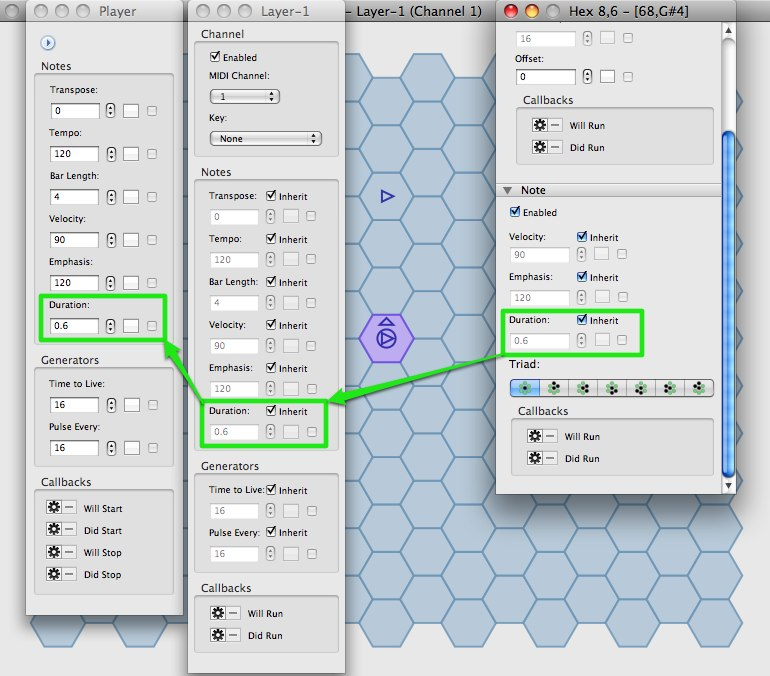
The arrows show how one duration knob inherits from another. The player knob doesn't have an inheritance control because it is "the master control".
So, by default, every note on layer 1 inherits its duration from the layer 1 duration knob which, in turn, inherits its value from the player duration knob. If you were to add a second layer you could override the duration so that all notes on layer 2 had a duration of 2s. Any particular note can "disinherit" and set its own duration.
At this point, whether you realize it or not, you've learned 80% of what there is to learn about these complex inspectors. The rest is familiarizing yourself with the tokens you can place on the layers, and the different knobs that determine what effect those tokens have.
Lets go through them now.
We'll start with the generate token which you have already seen:
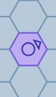
A generate token creates playheads and sends them off with a direction. How often does it do it? That depends upon the Pulse Every setting. With a Pulse Every of 1 you'd get a new playhead on every beat, at 2 one every other beat, at 3 one every third beat, and so on. You'll notice that, a playhead doesn't keep going forever. There are two reasons why a playhead dies. The first is if it crosses the edge of the layer and the second is if it lives too long. A playheads "life" is measured in beats and can be controlled by the Time to Live knob. This becomes an important parameter when you start setting up cyclical patterns.
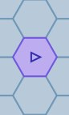
The note token, you will be unsurprised to hear, plays a note. The note played is governed by which cell the token is placed on according to the harmonic table you saw earlier. The various knobs in the inspector allow you to control how the note is played.
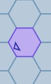
A rebound token changes the direction of a moving playhead. In this example any playhead entering its hex would rebound to the south west. Confusingly the triangle is identical to direction triangle of the generate token (this will be fixed eventually) but the two are independent. If you stack a rebound on top of a generate the rebound will not affect newly generated playheads. They will still get their direction from the generator.
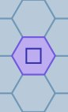
An absorb token "absorbs" any playhead entering its hex. Like the rebound this won't affect newly generated playheads if you stack an absorb on top of a generator.
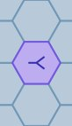
A split token splits one playhead into many. Each time a playhead enters its cell it a new playhead is sent out in every other direction. These playheads have the same Time To Live as the original playhead.
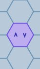
A spin token can be placed anywhere but it only has an effect when placed on top of either a generator or rebound token. The effect is simple, each time a generate generates, or a rebound rebounds its direction will change. Effectively the token "spins round". It's simpler to see than describe. Try it!
Okay, now you know about all the tokens, about layers, inspectors, knobs, inheritance, and a whole bunch more stuff. There is a huge amount of stuff left for you to discover but you know enough to be dangerous now so give it a try and make something cool!
Have fun.
Matt
For support check out Get Satisfaction or the #midi channel on FreeNode IRC.